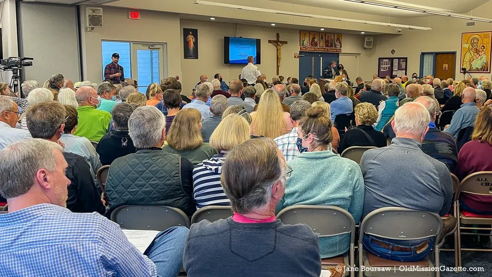
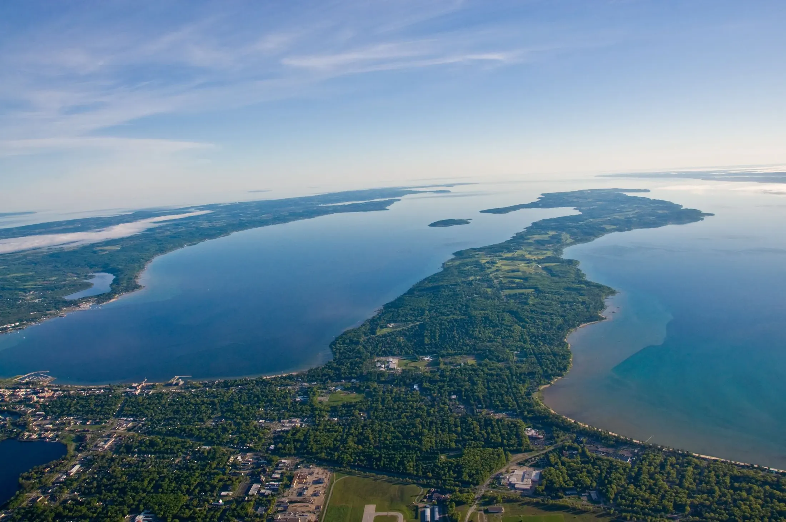
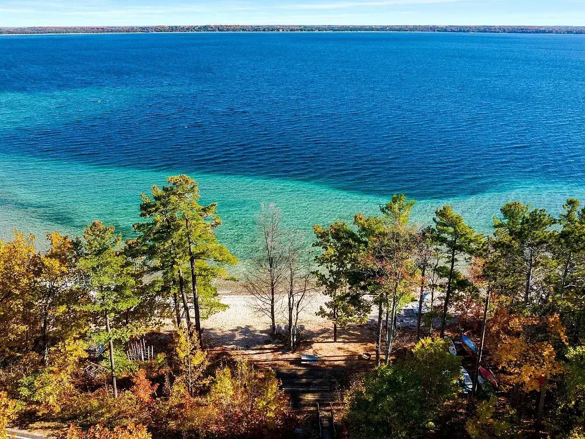

I
UnifyRebuild community connections
Restore civility, strengthen neighbor relationships and encourage respectful dialogue — not an “all or nothing” attitude.

Resident-led · Old Mission Peninsula, Michigan
Clear governance, fair agriculture regulation and a sustainable future for our 16-mile peninsula — led by the neighbors who live here.
01 Who we are
We are a resident-led coalition formed to answer divisive, overbearing township ordinances — and to restore unity, the right to farm, functional shoreline policy and honest financial transparency to Old Mission Peninsula.
02 Four pillars
03 Our priorities
Four focused goals to create a stronger, more unified Old Mission Peninsula.
Free farmers to be successful. Give the people who work this land the right to choose how they grow — crops, fruit, or the future of their property.
Read Amendment 201 (PDF) ↗Pass a shoreline ordinance that is workable — and equitable for all shoreline owners along both arms of the bay.
End the general over-regulation of individual property rights, and restore the freedom to enjoy the homes and land we care for.
A clearer, plain-language explanation of township finances so every resident can see where public money goes.
04 Why now
Previous resident surveythought we were headed in the right direction
Most recent resident surveysaid we are headed in the wrong direction
Survey figures as cited by the Coalition on its Mission page.

05 “Who are these guys?”
Coalition founder Fred Swaffer has lived on the peninsula for almost 33 years. He was asked by fellow residents to help change “the direction we seemed to be headed in.”
What started as a conversation between neighbors is now a coalition dedicated to restoring unity, promoting fair governance, and ensuring a sustainable future for our agricultural community.
Read our full story ↗06 Our commitment
We intend to publish a monthly report listing the names of our donors — and have pledged our donor list to the Township.
We have met with the Township twice to provide our legal documents. No back rooms — just neighbors and paperwork.
We are not involved in the Township / WOMP / PTP lawsuit. Our energy goes into policy that works for everyone.
07 Invest in the peninsula
New federal rules let many donors deduct up to $1,000 in cash gifts to a 501(c)(3) without itemizing.
08 Get involved
Updates on township developments, coalition initiatives, and opportunities to help shape the future of Old Mission Peninsula.